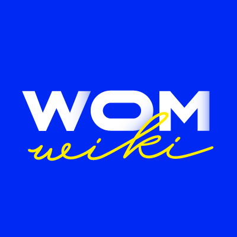

여성위키(WOMWIKI)는 2018년 8월 출범한 여성의, 여성에 의한, 여성을 위한 위키 공간을 표방하는 위키이다.1 사회 전반에 대한 여성주의적 담론을 기록할 여성들의 온라인 공간이 부재하다는 문제의식으로부터 출발하였으며,2 페미위키의 이전 운영진과 트위터의 여성주의자들이 함께 설립하였다.3 여성주의적 관점(FPOV; the Female Point of View)의 문서 작성을 표방한다.4 5 여성들이 여성의 관점으로 끊임없이 발언하고 사유할 수 있는 공간이 되고자 하며, 모든 형태의 반(反)여성주의와 백래시를 배제하고 특정 노선을 채택하지 않는다고 밝혔다.6 2018년 8월부터 클로즈드 멤버쉽을 대상으로 베타서비스를 제공해왔으며, 2020년 3월 8일 여성의 날을 맞아 위키독에서 임시오픈하였다.7 |  | |
| 말하는 여성의 입을 형상화한 여성위키 공식 로고. |
2018년 9월부터 여성위키 공식 트위터 계정을 통하여 꾸준히 여성주의와 연관된 유용하고 다양한 정보를 업로드하고 있다.
2018년 9월 30일 교내성폭력고발 아카이빙, 민원총공을 위한 스쿨미투 아카이빙 프로젝트 사이트를 제작했다. 공론화 진행 중인 학교 명단과 연락처, 공론화 계정이 기재되어 있다. 민원 제기를 통해 학생들과 연대할 것을 촉구하며 정부와 교육계의 반성과 변화를 요구했다. 해당 사이트는 크롬 및 사파리에 최적화 되어 있으며 페이지 하단에는 국민신문고 및 팩스청원에 쓸 민원 내용이 기재되어 있다.
2018년 11월 17일 순국 선열의 날을 맞아 여성독립운동가 가시화 프로젝트를 진행하였다. 위키사이트에 여성 독립운동가 문서를 만들어 아카이빙하고 독립운동가 300명을 정리한 영상을 만들어 배포하였다.